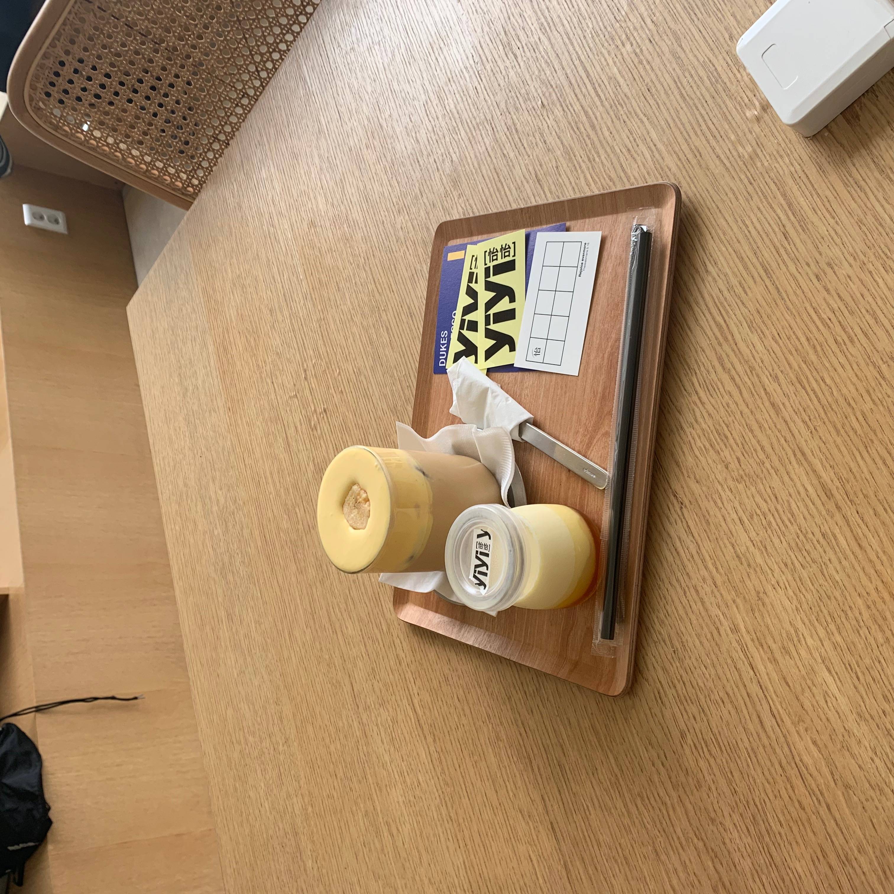
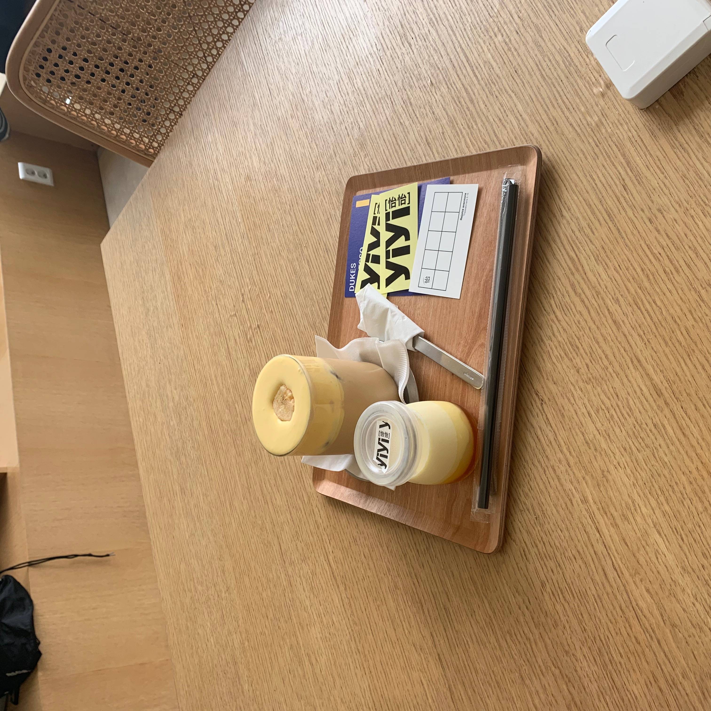

cafe
고등학교 때까지 나에게 카페란 친구와 함께 가끔 공부하러 가거나 커피를 먹고싶을때만 가는 장소였었다. 카페를 본격적으로 다니게 된 계기는 대학교에 들어오고나서 동기들과 공강시간을 떼우기 위해 놀러가면서부터였는데 처음에는 가기를 꺼려했지만 막상 가고나니 동기들과 카페에 가서 여유로운 시간을 보내면서 단순히 일상적인 얘기들만 해도 재미있다는 것을 알게되었고 이러한 좋은 기억으로 카페라는 장소를 좋게 생각하게 되었던 것 같다.
그 증거로 지금도 동기들과 거의 처음으로 같이 인하대 후문에 있는 눈밭이라는 빙수카페에 갔던 일이 떠오를 정도이다. 그 뒤에는 카페가는 걸 좋아하는 동기나 여자친구와 함께 다양한 카페들을 가게 되었는데, 커피를 직접 로스팅 한다거나 카페 각각의 시그니처 음료와 디저트가 존재하기도 하는 등 카페별로 다른 분위기가 있다는 것을 알게되었다.
그 후로는 카페마다 다른 분위기를 가지고 있는 것에 매력을 느껴 카페에 보다 자주가게 되었고 이러한 카페방문은 요즘까지 이어져 내가 좋아하는 편안한 분위기의 카페나 디저트가 맛있는 카페를 주로 찾아가게 되었는데 이러한 이유로 내가 좋아하는 것으로 카페를 소개하게 되었다.
 


<좋았던 카페들>